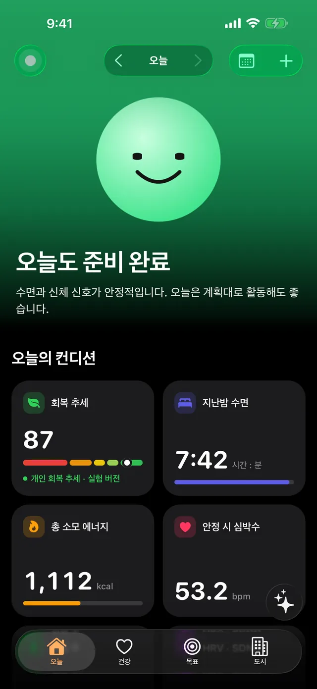
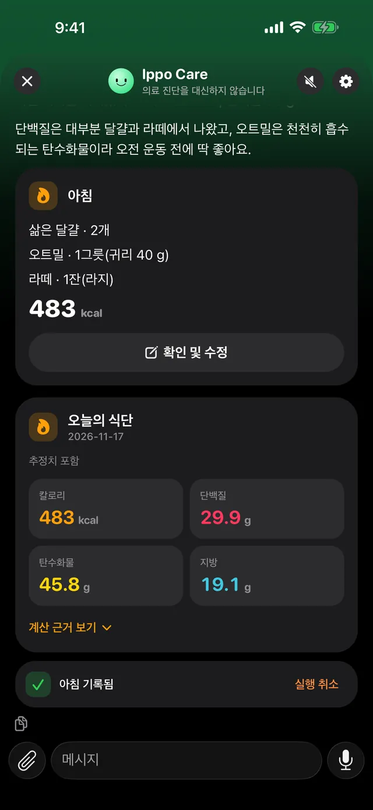
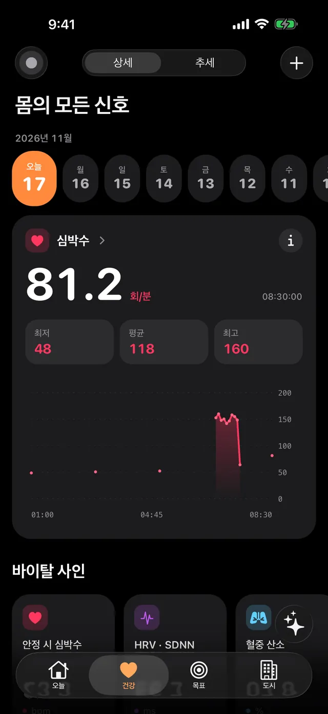

iPhone을 위한 개인 건강 파트너
iPhone을 위한 개인 건강 파트너
매일의 작은 한 걸음이 눈에 보이는 변화로.
Ippo Care는 Apple 건강 데이터와 식단, 운동을 한곳에 모으고, 꾸준히 지킬 수 있는 목표를 세우도록 돕고, 당신의 실제 성장으로 작은 도시를 키워 갑니다.
- 데이터는 iPhone에
- 계정 필요 없음
- 광고·추적 없음


개발자의 말
Ippo Care를 만든 이유
Yusen WangIppo Care 개발자
한때 저는 심한 과체중이었고, 체중 때문에 건강도 많이 나빠졌습니다. 헬스장에 가는 것이 부끄러웠고, 무엇부터 시작해야 할지도 몰랐습니다.
저를 바꾼 것은 AI였습니다. AI는 저를 평가하지 않았습니다. 제 몸을 이해하도록 돕고, 꾸준히 지킬 수 있는 계획을 함께 세우며, 한 걸음씩 나아가게 해 주었습니다. 그렇게 저는 체중 감량에 성공했고, 지금은 지난 몇 년 중 가장 건강하다고 느낍니다.
Ippo Care를 만든 이유는 예전의 저처럼 어디서부터 시작해야 할지 모르는 분들에게도 같은 조용한 응원을 전하고 싶었기 때문입니다. AI가 우리를 스스로 조금 더 사랑하게 해 주기를, 그리고 가상의 AI가 현실의 우리를 하루하루 더 나아지게 해 주기를 바랍니다.
당신의 데이터를 소중히 다룹니다
- 데이터는 iPhone 안에계정도, 개발자가 운영하는 건강 데이터베이스도 없습니다. 기록은 사용자의 기기에 저장됩니다.
- 광고도, 추적도 없음광고나 분석 SDK가 없으며 Apple 건강 데이터를 절대 판매하지 않습니다.
- AI는 직접 선택어시스턴트는 선택 기능이며, 사용자가 설정한 제공업체와 키만 사용합니다.
